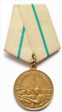
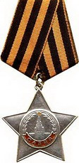
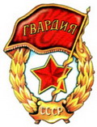
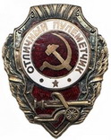

ДОРОГА К ДОМУ ДЛИНОЙ 65 ЛЕТ
Как мы сообщали в одном из первых номеров газеты, Фонд «Жить и Помнить» ведет розыск родственников солдата Великой Отечественной войны Синюшкина Николая Васильевича. Его останки в октябре 2008 года обнаружили в Выборгском районе Ленинградской области бойцы поискового отряда «Поиск» под командованием Геннадия Михайлова.
Вместе с поднятыми останками солдата были найдены его боевые награды. По одной из них – Ордену Славы 3 степени – через Центральный архив Министерства обороны поисковики смогли установить его имя. Затем они обратились в наш Фонд, чтобы мы помогли им разыскать родственников.
В ходе розыска было установлено, что младший сержант Синюшкин Н.В. 1920 года рождения является уроженцем деревни Трышиха Майковского сельсовета Горецкого (Кимрского) района Калининской области. Был призван в Красную Армию Горицким РВК в 1940 года. Последнее письмо от него семья получила в мае сорок четвертого. В Кинге Памяти Тверской области он числился пропавшим без вести. По документам ЦАМО выяснили, что в 1946 году сведения о нем пыталась разыскать его родная сестра Синюшкина Анна Васильевна.
В розыск родственников активно включились глава администрации Горецкого сельского поселения Людмила Пономарева и заведующая отделом молодежной политики администрации Кимрского района Ирина Еремеева. Совместными усилиями удалось установить, что на сегодняшний день близких родственников солдата на территории района не проживает. Было установлено только место жительства мужа сестры Николая Васильевича Асафьева И.В..
В результате главой Кимрского района и администрацией Горецкого сельского поселения было принято решение о перезахоронении останков Синюшкина Н.В. на его малой Родине в поселке Горицы. О принятом решении направлено уведомление командиру поискового отряда и администрации Выборгского района Ленинградской области. В канун 64-ой годовщины Великой Победы в поселке Горицы в торжественной обстановке с отданием воинских почестей погибшему земляку будет проведено перезахоронение его останков.
Еще один наш земляк, орденоносец, должным образом, по христианским обычаям, будет погребен на своей Родине, и имя его будет увековечено в памяти земляков, его потомков, всех жителей Тверской области.
Награды Николая Синюшкина
Орден Славы. Учреждён Указом Президиума Верховного Совета СССР от 8 ноября 1943 года. Награждались лица рядового и сержантского состава Красной Армии. Вручался только за личные заслуги. По своему статуту и цвету ленты полностью повторял одну из самых почитаемых в дореволюционной России наград — Георгиевский крест.
Медаль «За оборону Ленинграда» учреждена Указом Президиума Верховного Совета СССР от 22 декабря 1942 года. Награждались все участники обороны Ленинграда: военнослужащие; рабочие, служащие и другие лица из гражданского населения, которые участвовали в боевых действиях по защите города и содействовали его обороне. На 1985 год медалью «За оборону Ленинграда» награждено около 1 470 000 человек. Среди них 15 тысяч блокадных детей и подростков.
Знак “Отличный пулемётчик”. Учреждён Указом Президиума Верховного Совета СССР от 21 мая 1942 года.
У многих из награжденных во время войны на груди рядом с государственными наградами были и знаки отличия, учрежденные в годы Великой Отечественной войны. Первым из них стал нагрудный знак «Гвардия», учрежденный 21 мая 1942 года одновременно с введением для военнослужащих гвардейских званий. Первыми гвардейцами стали бойцы и командиры 100-й, 127-й, 153-й и 161-й стрелковых дивизий, проявивших в боях сорок первого образец мужества, отваги, дисциплинированности и организованности. Приказом наркома обороны эти соединения были преобразованы соответственно в 1-ю, 2-ю, 3-ю и 4-ю гвардейские стрелковые дивизии. |